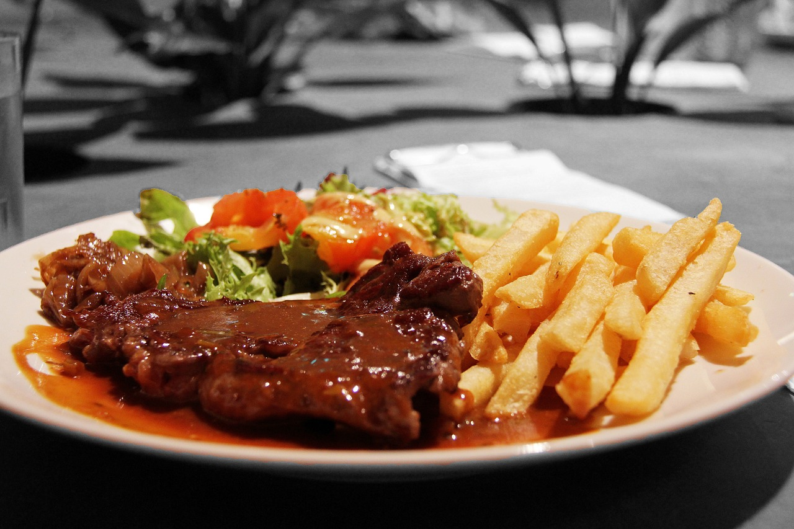
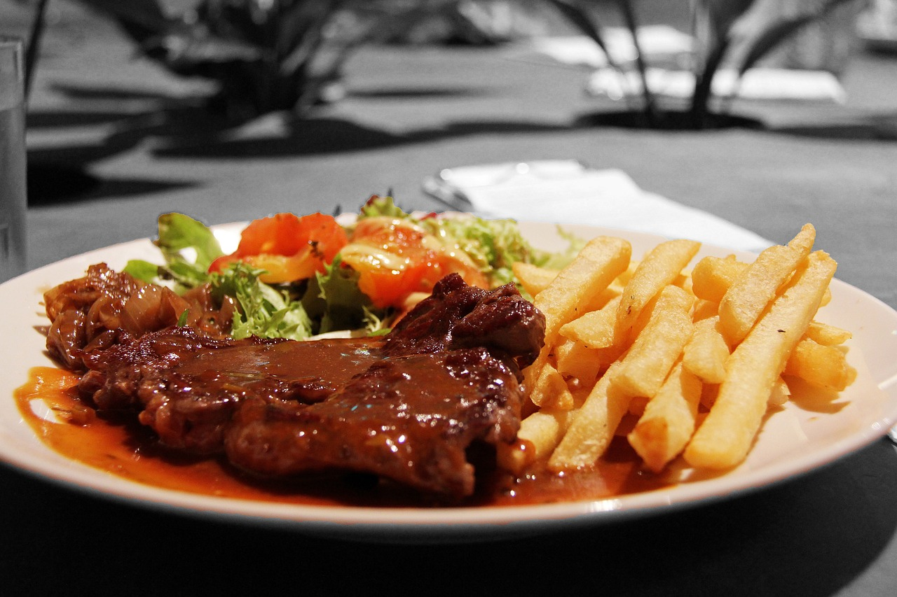
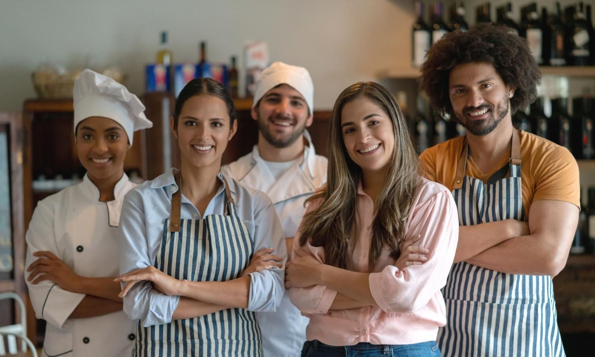

Acerca de Nosotros
En Luna Mágica, nos enorgullece ser tu destino principal para experiencias culinarias únicas. Más allá de ser simplemente un restaurante, somos un espacio dedicado a la creación de momentos especiales para ti y tus seres queridos.
Nuestro enfoque culinario va más allá de la preparación de platillos; nos esforzamos por brindarte una experiencia gastronómica que despierte tus sentidos y cree recuerdos duraderos. Cada plato que servimos no solo busca satisfacer tu paladar, sino también proporcionar una conexión emocional con la comida.
En Luna Mágica, creemos en construir relaciones sólidas con nuestros comensales. Nos esforzamos por ofrecer un ambiente acogedor y de confianza, donde te sientas respaldado en cada visita y encuentres en nosotros tu lugar especial para disfrutar de momentos memorables.
Confía en nosotros para ofrecerte un menú diverso que va desde sabores tradicionales hasta creaciones innovadoras, siempre con el objetivo de hacer que cada visita sea única y satisfactoria. En Luna Mágica, no solo cuidamos de tu experiencia gastronómica, sino que también estamos comprometidos con crear un espacio donde puedas disfrutar de una buena comida y una excelente compañía.
Únete a nuestra comunidad en Luna Mágica y descubre por qué somos tu destino gastronómico de confianza para disfrutar de una experiencia culinaria única y llena de magia. Estamos aquí para ti, porque crear momentos especiales es nuestra prioridad. ¡Te esperamos con los brazos abiertos en Luna Mágica!
Bienvenido al menú de Luna Mágica
Preguntas Frecuentes
¿Tienen opciones vegetarianas o veganas?
Sí, ofrecemos una variedad de opciones vegetarianas y veganas en nuestro menú. Para más información, consulte con su camarero o revise la sección específica del menú.
¿Ofrecen Wi-Fi gratuito?
Sí, ofrecemos Wi-Fi gratuito a nuestros clientes. La clave de acceso se encuentra disponible en la parte inferior del menú o puede solicitarla a su camarero.
¿Aceptan reservas?
Sí, aceptamos reservas por teléfono o a través de nuestro sitio web. Se recomienda reservar con anticipación, especialmente para los fines de semana o días festivos.
¿Cuál es el código de vestimenta?
Nuestro código de vestimenta es informal. Sin embargo, le pedimos que se vista con respeto por los demás comensales.
Contacto
¡Conéctate con nosotros en las redes sociales o contáctanos por WhatsApp!